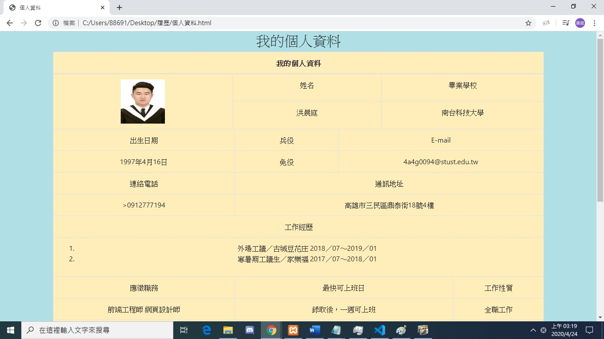
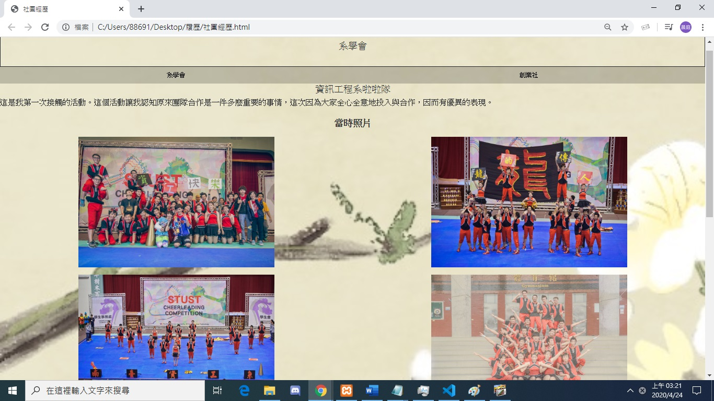
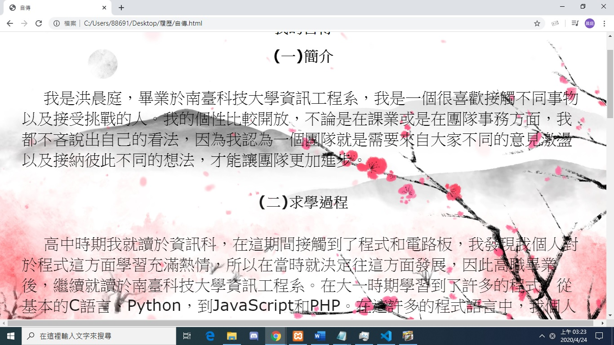

| 使用工具 | |
|---|---|
我是透過Boostrap所開發的首頁，因為這個框架可以透過jumbotron，col快速調整出網頁在手機和電腦上的排版，所以我決定使用這個框架來做出的我首頁。
我是利用boostrap框架所完成的表格，我最主要是希望能利用這個表格來增進Boostrap的實力，因為Boostrap這個部分大多都是靠自己學習的得來的。
我是先透過JavaScript來做出Tab的效果，來將我兩個社團的經歷分開，然後再套入一些CSS來修改我的網頁內容，例如一些簡單的動畫。
|  |
我的自傳主要透過簡單的div元素以及nav元素，將我的自傳內容一段一段的分開，然後加上一些簡單的CSS的動畫，以及用RWD增加網頁豐富度。
這是我第一次學習js所接觸到的程式，他將輸入的值，帶入2個for迴圈和table來幫助排版。
這是一個利用判斷以及亂數來完成的程式，每當我們輸入一個數字後，程式中的也會自己用Random產生一個亂數，這個時候他就會開始自己比大小，並顯現出結果，我還加了radio來增添這個遊戲的豐富度。
這個是一個簡單的利用jquery的addClass指令來完成所需要的指令，
這一個比大小的類型，長得差不多，一樣輸入一個數字，然後利用一個簡單的判斷，判斷我輸入的值是否跟電腦隨機所慘生的值是否相同，然後依照個每次的結果所輸出的內容皆不相同。
這原本是一個隨機產生5個0~550的亂數，但後來他們希望可以加上一點動畫，於是便利用Js寫出一個Random，並透過body onload讓他自動執行，並設定每秒出現一次，並將它出現在按鈕裡，來完成一個動畫感覺，最後再利用jquery的append來增加特色。
這是利用php的opendir指令所完成的
這是利用php的date指令所完成的
增進迴圈的能力
我是直接利用for迴圈來幫助快速完成pow()的計算
利用for判斷他還能不能被2整除，並只要每成功整除一次，就讓自己所設定的變數+1一次
利用到array_sum()和count()來快速完成的指令
把學生和他們各自的分數都換成陣列並透過for來算出他們各自相加的分數
練習兩個PHP的內容互丟
透過fopen的開檔和寫入，將我們原來的TXT檔的資料寫入另外一個txt檔
透過fopen的開檔和寫入，但是要透過strtoupper將原來txt的字母大小寫轉換並寫入另一個txt檔